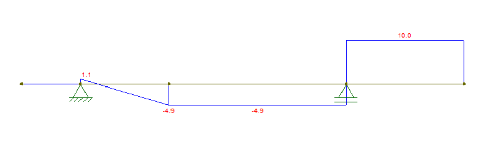

Embasamento teórico
O ensino de mecânica vetorial e o uso de diagramas para a visualização de esforços
A mecânica pode ser definida como a Ciência que descreve e prevê as condições de repouso ou movimento dos corpos sob a ação de forças, podendo ser dividida em très partes: a mecânica dos fluidos, dos corpos deformáveis e a mecânica dos corpos rígidos, sendo essa o foco de estudo de disciplinas de introdução à mecânica vetorial e mecânica dos sólidos. No curso destas, a mecânica dos corpos rígidos é abordada para casos estáticos em condição de equilíbrio de modo que os casos estudados envolvem um entendimento das forças internas e externas em ação sobre corpos extensos, cenários retratos como o estudo de vigas simplificadas e das cargas aplicadas sobre estas. Com esse objetivo o cálculo das forças de reações nos pontos de apoio, do componente perpendicular a seção transversal da viga, chamado de força normal, do componente de esforços tangentes à seção transversal, designados como esforços cisalhantes e do momento binário, conhecido como fletor, e dos diagramas que representam esses vetores ao longo da viga tornam-se rotineiros ao longo das disciplinas que envolvem mecânica dos sólidos.
Reações de Apoio
Para o estudo do equilíbrio dos corpos rígidos não basta conhecer somente as forças externas que agem sobre ele, mas também é necessário conhecer como este corpo rígido está apoiado. 1º Gênero (Apoio móvel): Impede movimento na direção normal (perpendicular) ao plano do apoio. Permite movimento na direção paralela ao plano do apoio – translação livre. Permite rotação. Restringe uma translação, exigindo uma reação de apoio. Possui 2 graus de liberdade.


2º Gênero (Apoio Fixo):
Impede qualquer translação (movimento nas direções, normal e perpendicular, ao plano do apoio). Exige duas reações de apoio perpendiculares entre si. Permite rotação. Restringe duas translações, possuindo 1 grau de liberdade.
3º Gênero (Engastamento):
Impede qualquer translação e rotação. Exige três reações de apoio (duas forças perpendiculares entre si e um momento). Restringe duas translações e uma rotação, possuindo 0 grau de liberdade.
4º Gênero (Engastamento deslizante):
Impede rotação e translação na direção perpendicular ao plano do apoio. Exige duas reações de apoio. Possui 1 grau de liberdade.
Esforços Internos
O projeto de qualquer elemento estrutural ou mecânico requer uma investigação das cargas que atuam em seu interior para a garantia de que o material utilizado possa resistir a tal carregamento. De uma forma geral, os esforços internos: São os esforços estaticamente equivalentes a todo carregamento externo da estrutura, atuando em uma determinada seção, a fim de garantir o equilíbrio de todas elas. Uma seção divide uma estrutura em dois segmentos ou partes. Traduzem a influência da outra parte da viga, na seção transversal em exame. São aplicados no centro de gravidade da seção transversal. São funções de uma única variável, que é a seção transversal. Em duas dimensões, mostramos que existem três resultantes das cargas internas: Esforço Normal, Cortante e Momento Fletor.
Esforço Normal
Atua na direção normal ou perpendicular ao plano da seção, provocando variação da distância entre as seções vizinhas. Provoca tração ou compressão da seção transversal.
Esforço Cortante
Aplicada no plano da seção transversal, provocando escorregamento entre seções vizinhas. Tangente à seção transversal

Momento Fletor
Tende a girar a seção em torno de um eixo perpendicular ao eixo da viga. Provoca flexão. O momento fletor faz com que cada seção gire em relação à sua vizinha, provocando tração em uma região da viga e compressão no lado oposto.

Diagramas de Esforços Internos
O dimensionamento de uma estrutura requer um conhecimento detalhado da variação dos esforços que atuam ao longo da mesma. Os diagramas de esforços internos são traçados para se determinar a evolução dos esforços (cortante, normal e momento fletor) ao longo de toda uma estrutura. Diagramas de esforços são representações gráficas, permitindo avaliar como cada esforço varia ao longo da estrutura como um todo.
Software
Em software, serão utilizados fundamentos de visão computacional para que seja feito o reconhecimento de objetos assim como a deformação do material utilizado na estrutura.
A linguagem de programação Python possui diversas bibliotecas voltadas ao processamento de imagem.
- OpenCV: Biblioteca do Python para manipulação de imagens;
- Zbar : Biblioteca do Python útil na leitura e interpretação de QRCodes; Após pesquisas, foram encontradas algumas técnicas úteis no processamento de imagem aplicáveis ao projeto:
- Transformada de Hough: Técnica matemática que realiza detecção de formas geométricas em imagens digitais;
- Algoritmo Canny: utilizado na detecção de bordas por meio da derivada;
- Técnicas para segmentação de cores;
Além do processamento de imagem será utilizado o software Ftool que é útil para simulação de forças em corpos extensos, conteúdo estudado em Mecânica dos Sólidos. Por meio do software é possível adicionar forças, apoios, direções e visualizar deformações além de gerar diagramas úteis na análise de esforços. Para a aplicação móvel será utilizado o Java por meio do ambiente Android Studio. O java é uma linguagem orientada a objetos e bastante utilizada por ser feita para utilização em diversos contextos. Em resumo, uma mesma aplicação pode ser utilizada tanto em um relógio inteligente quanto em um smartphone, por exemplo.